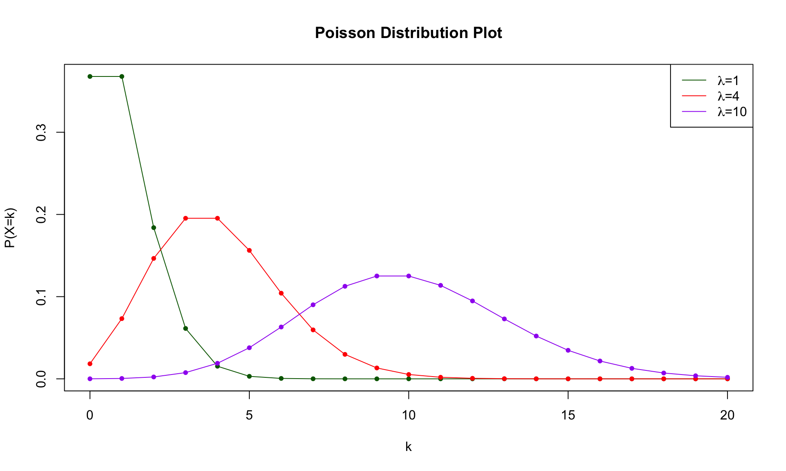
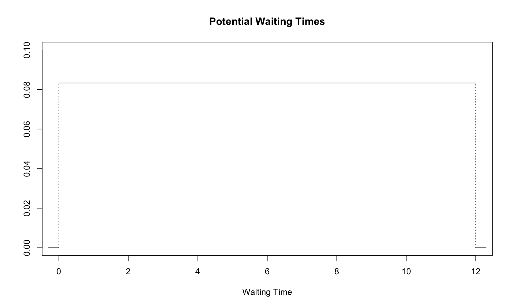
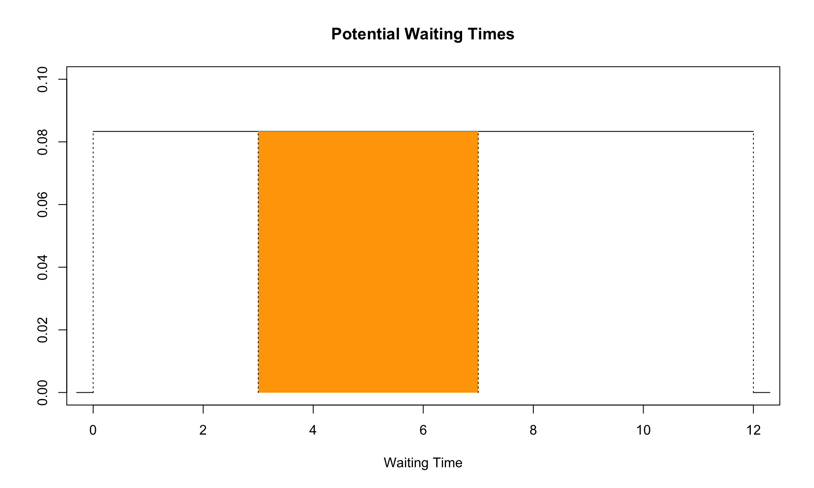
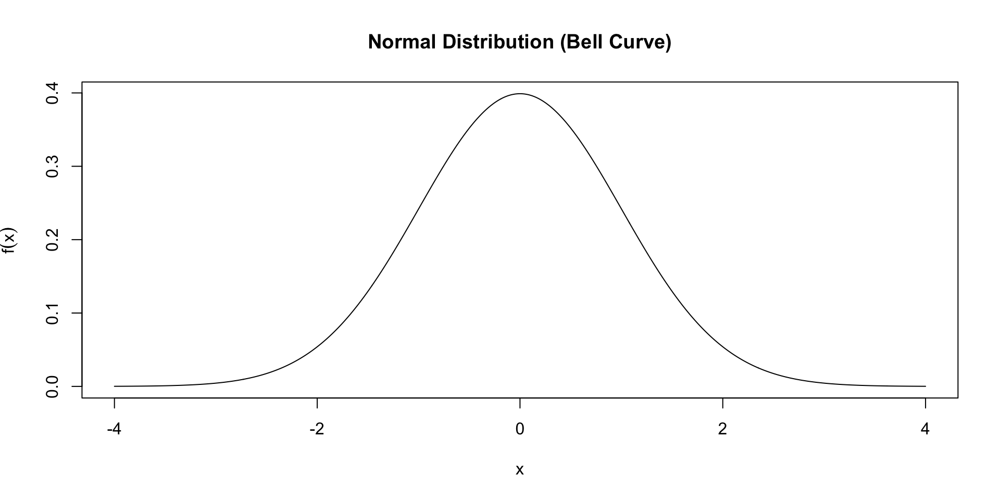
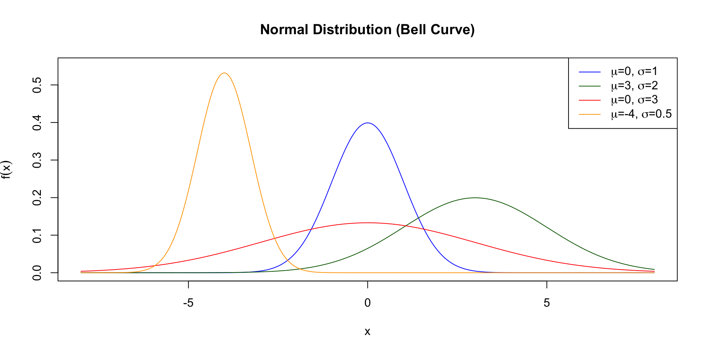
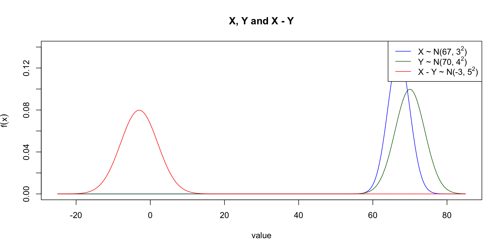

![]()

PSTAT 10 Data Science Principles
Lecture 11: Continuous Random Variables
September 1, 2026
Introduction
🔁 Review: Lecture 10
👈 Last lecture we had a very math heavy lecture covering:
- Random Variables (RVs)
- Probability Mass Functions (PMFs)
- Cumulative Distribution Functions (CDFs)
- Binomial Distribution
rbinom(),pbinom()anddbinom()functions
👀 Outline: Lecture 11
👇 This lecture is again a little math heavy, and we shall be looking at:
- Generalizing
rbinom(),pbinom()anddbinom()functions - Continuous RVs
- Continuous Uniform Distribution
- Normal (Gaussian) Distribution
Recap
🔁 Recap — Discrete Random Variables
Recall the following definitions:
- A random variable \(X\) is a mathematical object taking numerical outputs corresponding to a random experiment.
- A probability mass function (PMF) of random variable \(X\) is defined by \[ p_X(k) = \mathbb{P}(X=k), \] which is non-zero for values \(k\) in the support of \(X\).
- The cumulative distribution function (CDF) of a random variable \(X\) is defined by \[ F_X(k) = \mathbb{P}(X\leq k). \]
- The expectation of (discrete) \(X\) is defined by \(\mathbb{E}[X] = \sum_{x\in\mathcal{X}} x\cdot\mathbb{P}(X=x).\)
🔁 Recap — Binomial Distribution
Consider a random variable \(X\) that follows a \(\text{Binomial}(n,p)\) distribution.
The PMF and CDF of \(X\) respectively are
\[ \begin{align} p_X(k) & = \mathbb{P}(X=k) = {n \choose k} \cdot p^k \cdot (1-p)^{n-k} \\ \\ F_X(k) & = \mathbb{P}(X\leq k) = \mathbb{P}(X=0) + \mathbb{P}(X=1) + ... +\mathbb{P}(X=k) \end{align} \]
We have a quick practice with the rbinom(), pbinom() and dbinom() functions.
🔁 Recap — dbinom(), pbinom() & rbinom()
dbinom()determines the probability of \(X\) taking a specific value, i.e. \(\mathbb{P}(X=k)\).pbinom()determines the CDF of \(X\) at a certain value, i.e. \(\mathbb{P}(X\leq k)\).rbinom()generates realizations from a \(X\sim\text{Binomial}(n,p)\) random variable.
📋 General Functions
These functions each take the general form of the base R functions that exist for the key named distributions (some of which we will cover later).
We summarize these functions in the table below:
| Binomial | Poisson | Geometric | Role |
|---|---|---|---|
dbinom() |
dpois() |
dgeom() |
PMF |
pbinom() |
ppois() |
pgeom() |
CDF |
qbinom() |
qpois() |
qgeom() |
Quantile |
rbinom() |
rpois() |
rgeom() |
Simulation |
📌 Note that the discrete uniform is different since we use the sample() function instead.
Poisson Distribution
🐦 Poisson Distribution
A Poisson random variable describes the outcomes of an experiment counting occurrences in a fixed time interval when the mean rate of occurrence is known.
- E.g. the number of emails received per hour, customers arriving at a store per day, or typos on a printed page.
- E.g. the number of earthquakes in a region per year, or radioactive decay events detected per second.
Formally, the PMF of the Poisson random variable \(X\sim\mathcal{P}(\lambda)\) with mean rate \(\lambda\) is:
\[ \mathbb{P}(X=k)=\frac{e^{-\lambda}\lambda^k}{k!};\quad k \in\{0,1,2,...\}. \]
📌 The CDF of this distribution is quite complicated mathematically and is not covered in this course.
🐦 Poisson Distribution Plot
🐦 Poisson Distribution Functions
Recall the roles of the functions dpois(), ppois() and rpois(). Below we demonstrate how to use them.
Examples
Compute \(\mathbb{P}(X=3)\) when \(X\sim\mathcal{P}(2)\).
🎯 Example — Expectation of a Poisson RV
Since \(\lambda\) is defined as the mean rate of occurrence, the expectation of a Poisson random variable is simply
\[ \mathbb{E}[X] = \lambda. \]
Recall \(X\sim\mathcal{P}(3)\) from our previous example. Applying the formula:
\[ \mathbb{E}[X] = 3. \]
This matches the simulation from the previous slide, which averaged to approximately 3:
📌 In general, for \(X\sim\mathcal{P}(\lambda)\), \(\mathbb{E}[X] = \lambda\).
Continuous Random Variables
🔄 Motivation
So far we have been considering discrete random variables, i.e. random variables with discrete support:
- Bernoulli \(\{0, 1\}\)
- Binomial \(\{0,1,...,n\}\)
- Discrete Uniform \(\{\text{item}_1, \text{item}_2, ..., \text{item}_k\}\)
- Anything countable \(\{..., -2, -1, 0, 1, 2, ...\}\)
What about continuous random variables with continuous support:
- Closed intervals \([0,1]\)
- Open or partially open intervals \((0,1)\) and \([0,1)\)
- Times, heights, weights, position on a dartboard or in a cube, etc.
⚡ Probability Paradox
Remember that \(\mathbb{P}(X=k)\neq 0\) for any value \(k\) in the support of a discrete random variable \(X\).
📌 This is not true for a continuous random variable!
- Recall we discussed that the probability of selecting a single number from a continuous interval is zero.
- However, the probability for selecting a subinterval from a continuous interval is nonzero.
Returning to our dartboard example: the probability of hitting any single point is zero, but the probability of hitting a whole region is not.
- E.g. the probability of hitting the bottom half of the dartboard is non-zero.
- In fact, with a uniformly random throw, that probability is exactly \(\frac{1}{2}\) — the region’s share of the board’s area.
📊 Probability Density Functions
- Continuous random variables are described by density functions.
- Similar to mass functions for discrete random variables but with no point masses.
- Probabilities are no longer point masses but are instead described by areas under curves.
The probability density function (PDF) of a continuous random variable \(X\) is a function \(f_X(x)\) such that for any \(a\leq b\), \[ \mathbb{P}(a\leq X\leq b) = \int_a^b f_X(x)\,dx. \]
The cumulative distribution function (CDF) of a continuous random variable \(X\) is \[ F_X(x) = \mathbb{P}(X\leq x) = \int_{-\infty}^x f_X(t)\,dt. \]
Continuous Uniform Distribution
🚌 Motivating Example
Bus waiting times
To consider a practical example, suppose buses arrive at a stop every 12 minutes. If you arrive at the bus stop at a random time, how long will you wait?
- In the best case scenario?
- In the worst case scenario?
Let \(X\) be the time you wait for the bus, i.e. a continuous random variable supported on \((0,12)\).
To select a distribution we must consider what assumptions to make.
To make a claim about the distribution of \(X\) we make the following assumptions:
- We arrive at the bus stop at a random time; and
- You are equally likely to arrive at any point between the \(n\)-th and \((n+1)\)-st bus.
This is the continuous version of the uniform distribution, hence we define a continuous uniform random variable.
📏 Continuous Uniform Distribution
A continuous uniform random variable \(X\sim\mathcal{U}([a,b])\) with continuous support \([a,b]\) has probability density function
\[ f_X(x) = \begin{cases} \frac{1}{b-a} &\quad x\in[a,b] \\ 0 & \quad \text{otherwise}. \end{cases} \]
As a check, notice that the density integrates to 1 over its support, as required of any PDF:
\[ \int_a^b f_X(x)\,dx = \int_a^b \frac{1}{b-a}\,dx = \left[\frac{x}{b-a}\right]_a^b = \frac{b-a}{b-a} = 1. \]
In the case of our bus stop example the support is \([0,12]\), i.e. \(a=0\) and \(b=12\), and so for \(X\sim\mathcal{U}([0,12])\) we have that
\[ f_X(x) = \frac{1}{12};\quad x\in[0,12]. \]
📏 Visualizing the Uniform Density

📈 Continuous Uniform CDF
You may have noticed that since we can only compute the probability that \(X\) falls in an interval, we are primarily interested in the CDF of continuous random variables, since
\[ \mathbb{P}(p\leq X\leq q)=\mathbb{P}(X\leq q) - \mathbb{P}(X\leq p) = F_X(q) - F_X(p). \]
Often it is challenging to write a closed form expression for the CDF, but in the case of the continuous uniform we find that the CDF is given by:
\[ F_X(x) = \mathbb{P}(X\leq x) = \frac{x-a}{b-a};\quad x\in [a,b]. \]
Using calculus, we can derive this CDF directly from the PDF by computing:
\[ \begin{align} F_X(x) & = \mathbb{P}(X\leq x) = \int_a^x f_X(y)\,dy \\ & = \int_a^x \frac{1}{b-a}\,dy = \left[\frac{y}{b-a}\right]_a^x \\ & = \frac{x-a}{b-a}. \end{align} \]
🎯 Uniform Probabilities
Let’s say we wish to compute analytically the probability that the wait time is between 3 and 7 minutes. This is equivalent to computing the shaded area:

🧮 Uniform Integral
We can compute this quickly using the CDF:
\[ \begin{align} \mathbb{P}(3\leq X\leq 7) & = \mathbb{P}(X\leq 7) - \mathbb{P}(X\leq 3) \\ & = \frac{7-0}{12-0} - \frac{3-0}{12-0} = \frac{1}{3}. \end{align} \]
This can clearly be computed using basic geometry, but to practice our calculus methods we can also arrive at the same answer directly:
\[ \begin{align} \mathbb{P}(3\leq X\leq 7) & = \int_3^7 f_X(x)dx \\ & = \int_3^7 \frac{1}{12}dx \\ & = \left[\frac{x}{12}\right]_3^7 \\ & = \frac{7}{12}-\frac{3}{12} = \frac{4}{12}=\frac{1}{3}. \end{align} \]
🧮 punif() Function
R has the in-built function punif() for computing the uniform CDF \(\mathbb{P}(X\leq x)\), which has the syntax:
qis the quantile \(x\)minis the lower bound of the support \(a\)maxis the upper bound of the support \(b\)
Quick Examples: for \(X\sim\mathcal{U}([0,12])\),
[1] 0.5[1] 1📋 General Functions (Continuous)
Much like with discrete random variables we have 4 standard functions for each distribution:
| Uniform | Exponential | Normal | Role |
|---|---|---|---|
dunif() |
dexp() |
dnorm() |
|
punif() |
pexp() |
pnorm() |
CDF |
qunif() |
qexp() |
qnorm() |
Quantile |
runif() |
rexp() |
rnorm() |
Simulation |
📌 R has built-in d/p/q/r functions for many more continuous distributions too — e.g. gamma (dgamma()), beta (dbeta()), chi-squared (dchisq()), Student’s t (dt()), and log-normal (dlnorm()).
💪 Exercise — Continuous Uniform in R
04:00
Use the functions from the previous slide to answer the following questions about the continuous uniform random variable \(X\sim\mathcal{U}(10,25)\):
- What is the probability that \(X\) takes a value greater than 20? (Hint: You can set
lower.tail = FALSE) - What is the probability that \(X\) takes a value either greater than 19 or less than 15?
- Use simulation to approximate the expected value of \(X\).
✅ Solution — Continuous Uniform in R
[1] 0.3333333[1] 0.7333333[1] 17.56636punif(20, ..., lower.tail = FALSE)computes \(\mathbb{P}(X>20)\) directly using the upper tail of the CDF.- Since the events \(\{X>19\}\) and \(\{X<15\}\) are mutually exclusive, we can just add their individual probabilities together.
runif(10000, ...)simulates 10000 realizations of \(X\), andmean()approximates \(\mathbb{E}[X]\) via their long-run average.
Normal Distribution
🔔 What is the Normal Distribution
The normal (Gaussian) distribution is the most important distribution in statistics. It is more commonly known as the bell curve.

🔔 Normal Parameters
What is the Normal Distribution?
- The normal (Gaussian) distribution is the most important distribution in statistics.
- It is more commonly known as the bell curve because of its symmetric, bell-shaped density.
Normal Random Variable
We denote a normal random variable \(X\sim\mathcal{N}(\mu,\sigma^2)\).
The normal distribution is described by parameters:
- The mean \(\mu\) describes the location of the peak; and
- The variance \(\sigma^2\) describes the spread of the bell.
In our previous plot above we used \(\mu=0\) and \(\sigma^2=\sigma=1\), which is known as a standard normal distribution.
🔔 Normal Parameter Plots

🔔 Normal PDF and CDF
For normal random variable \(X\sim\mathcal{N}(\mu,\sigma^2)\) the density function is
\[ f_X(x) = \frac{1}{\sqrt{2\pi\sigma^2}}\exp\left(\frac{-(x-\mu)^2}{2\sigma^2}\right);\quad x\in\mathbb{R}. \]
CDF
Hence if we wish to determine \(\mathbb{P}(-1\leq X\leq 1)\) we determine
\[ \mathbb{P}(-1\leq X\leq 1) = \int_{-1}^1 \frac{1}{\sqrt{2\pi\sigma^2}}\exp\left(\frac{-(x-\mu)^2}{2\sigma^2}\right) dx, \]
which isn’t so easy to compute. Instead we can use R functions!
🔔 Examples — Normal R Functions
Compute \(\mathbb{P}(3\leq X\leq 10)\) when \(X\sim\mathcal{N}(4,3^2)\).
[1] 0.6078085Approximate the mean of the sum of two \(X\sim\mathcal{N}(1,2^2)\) random variables using \(n=10000\) simulations.
[1] 1.974857💪 Exercise — Normal Probability
05:00
Suppose the heights of students in class A are normally distributed with a mean \(\mu=67\) inches and a standard deviation of \(\sigma=3\) inches.
- What is the probability that a randomly selected student’s height is between 63 and 70 inches?
Now consider class B student heights, which we suppose are normally distributed with mean \(\mu=70\) inches and a standard deviation of \(\sigma=4\) inches.
- Use \(n=10000\) simulations to determine the probability that a randomly selected student from class A is taller than a randomly selected student from class B, assuming the class heights are independent.
✅ Solution — Normal Probability
- We compute \(\mathbb{P}(63\leq X\leq 70)\) for class A (\(X\sim\mathcal{N}(67,3^2)\)) as the difference of two CDF values: \(F_X(70)-F_X(63)\).
- We simulate 10000 heights from each class independently, then use
mean()on the logical comparison to approximate \(\mathbb{P}(X>Y)\) — the proportion of simulations where the class A height exceeds the class B height.
🤔 Interesting Result — Motivating Problem
Stepping outside the bounds of the course for a moment, we take a look at this last simulation.
Define \(X\sim\mathcal{N}(67,3^2)\) and \(Y\sim\mathcal{N}(70,4^2)\).
We approximated via simulation:
\[ \mathbb{P}(X>Y)=\mathbb{P}(X-Y>0) \]
But can we compute this probability exactly?
🤔 Interesting Result — Why is \(X-Y\) Gaussian?
A remarkable fact from probability theory: any linear combination of independent normal random variables is itself normal.
Suppose \(X_1\sim\mathcal{N}(\mu_1,\sigma_1^2)\) and \(X_2\sim\mathcal{N}(\mu_2,\sigma_2^2)\) are independent. Then
\[ X_1 - X_2 \sim \mathcal{N}\left(\mu_1-\mu_2,\; \sigma_1^2+\sigma_2^2\right). \]
The mean follows from linearity of expectation:
\[ \mathbb{E}[X_1-X_2] = \mathbb{E}[X_1] - \mathbb{E}[X_2] = \mu_1-\mu_2. \]
The variance follows since \(X_1\) and \(X_2\) are independent:
\[ \text{Var}(X_1-X_2) = \text{Var}(X_1) + \text{Var}(-X_2) = \sigma_1^2+\sigma_2^2. \]
🤔 Interesting Result — Computing the Probability
Applying this to \(X\sim\mathcal{N}(67,3^2)\) and \(Y\sim\mathcal{N}(70,4^2)\) with \(\mu_1=67,\sigma_1=3,\mu_2=70,\sigma_2=4\), we get
\[ X-Y \sim \mathcal{N}\left(67-70,\; 3^2+4^2\right) = \mathcal{N}(-3, 25) = \mathcal{N}(-3, 5^2). \]
🤔 Interesting Result — Visualizing \(X\), \(Y\) and \(X-Y\)

Summary
✅ Topics Covered
🤔 Today we covered a lot of material, including:
- Poisson Distributions
- Generalizing R Functions
- Continuous Random Variables
- Continuous Uniform Distribution
- Normal (Gaussian) Distribution
📅 Next Class
🤩 Next class we will conclude our exploration of probability by looking into:
- More Advanced Simulations!